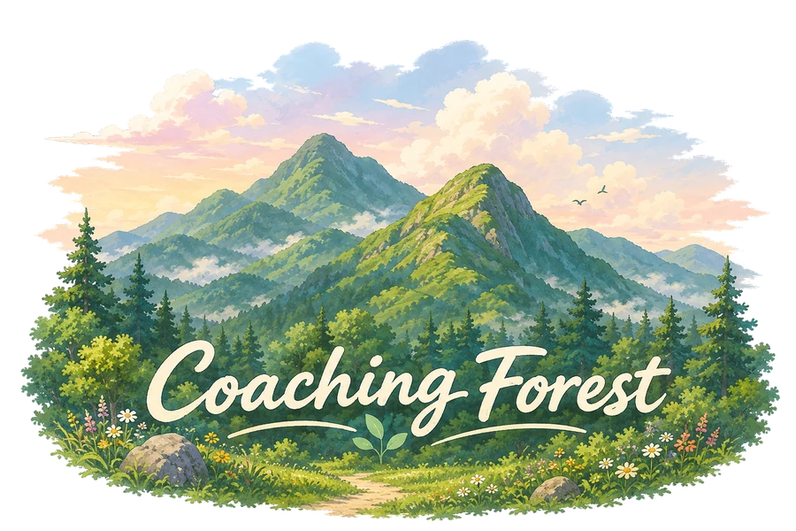

CoachingForest
Fun · Free · Forest

Profile
사람을 향한 질문으로 변화를 함께 만드는 코칭포레의 대표 코치입니다.
최현정
연락처: 카카오채널 '코칭포레'
CoachingForest 대표 코치
멘토 코칭과 코칭 강의, 자격 인증 지원을 통해 코치로 성장하는 여정을 함께합니다.
현장에서 쌓아온 실전 사례를 바탕으로, 이론에 머무르지 않는 코칭 역량을 전합니다.
저서 「사례로 익히는 실전 코칭」을 통해 핵심역량부터 자격인증까지의 과정을
구체적인 사례로 풀어내며, 코칭을 배우는 이들의 실질적인 성장을 돕고 있습니다.
Personal Coaching
삶의 방향과 성과, 두 가지 축에서 필요에 맞는 코칭을 제공합니다.
일과 관계, 삶의 균형과 방향을 스스로 찾아가도록 돕는 코칭입니다.
리더십과 성과, 조직 안에서의 성장 과제를 함께 다루는 코칭입니다.
Mentor Coaching
코치로서의 역량과 정체성을 다지는 1:1 멘토 코칭을 제공합니다.
실제 코칭 세션을 함께 듣고, 핵심역량 관점에서 강점과 보완점을 구체적으로 짚어드립니다.
정해진 틀이 아닌, 코치 개인의 스타일을 살리는 방향으로 세션을 함께 다듬어갑니다.
자격 취득과 그 이후의 코치 여정까지, 단계별로 다음 목표를 함께 설계합니다.
Forest Coaching
숲이라는 공간이 열어주는 감각과 여백으로 코칭을 확장합니다.
Lectures
코칭을 처음 만나는 순간부터 현장 적용까지, 단계에 맞는 강의를 진행합니다.
코칭의 철학과 기본 대화 구조를 익히는 기초 과정입니다.
사례 중심의 실습으로 코칭 핵심역량을 깊이 있게 다지는 과정입니다.
실제 세션에서 즉각적으로 반응하는 힘을 기르는 훈련 과정입니다.
Certification Support
한국코치협회와 ICF, 두 자격 체계에 맞춘 준비 과정을 지원합니다.
Writing
현장의 사례를 담은 책으로, 코칭을 배우는 과정을 더 가까이에서 안내합니다.
사례로 익히는 실전 코칭
한국코치협회 핵심 역량과 흐름을 사례로 쉽고 명확하게 풀이해 바탕을 마련하고, 실전코칭을 위한 주제별 코칭 사례를 예시하였다. 코치 자격 준비를 위한 KAC와 KPC·KSC 심사항목을 반영한 사례 및 심사항목과의 매칭표, 항목별 구현 방식 등을 제시하였다.
실전과 자격을 위한 한국코치협회 코치들 사이에 '노란 책'으로 불리는 그 책.
2023년 출간 후 1판 1, 2, 3쇄에 이어 2026년 KAC, KPC, KSC 심사항목을 반영한
2판 출간
미국 코치 한국 코치가 함께 쓴 PCC 가이드
ICF가 요구하는 PCC 기준의 본질을 짚어 코칭에 구현하도록 돕는 실전 안내서. 미국·한국 코치가 공동 집필한 이 책은 자격 취득을 넘어, 세계 어디서나 통하는 전문 코치의 역량을 갖추는 길을 제시한다. 최신 ICF 역량과 최소 기술요건(MSR), PCC 마커 분석, 필기시험 방법론과 예시, 취득 절차를 담았다.
PCC 취득은 물론 코칭 역량 향상과 MCS 멘토코칭 준비·실무 적용에 유용한 종합 지침서